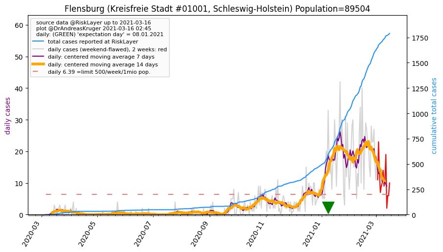
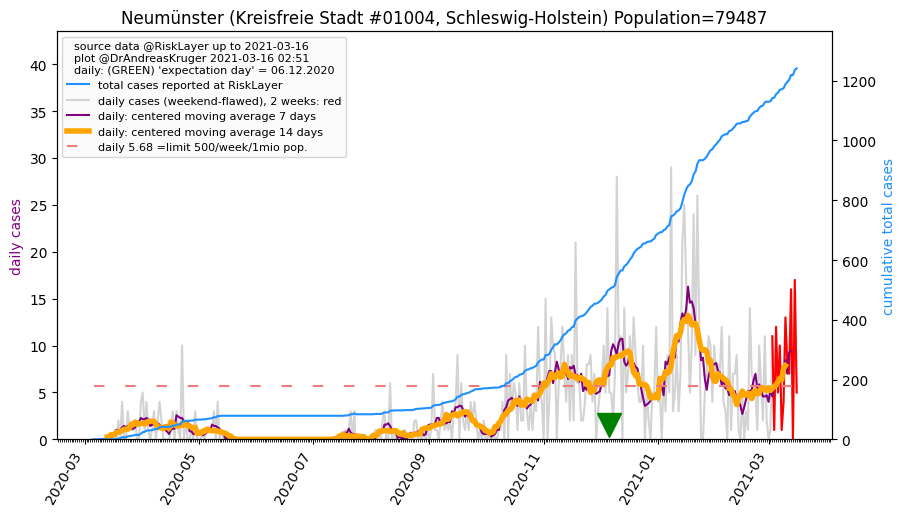
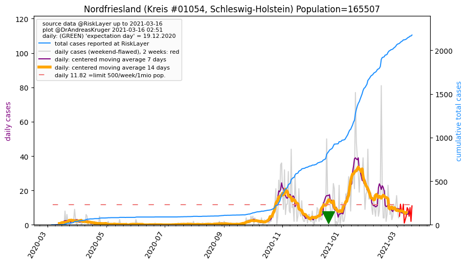

Up to about.html or to overview of Germany
Or down to Kreise (districts)

 Schleswig-Holstein, and its 15 districts (08.08.2020)
Schleswig-Holstein, and its 15 districts (08.08.2020)
 population: 2,896,712 --> current prevalence: 1240 known infected per 1 million population
population: 2,896,712 --> current prevalence: 1240 known infected per 1 million population
total cases: [5, 7, 8, 9, 10, 12, 15, 29, 35, 48, 74, 111, 137, 151, 235, 276, 359, 405, 454, 503, 593, 655, 754, 864, 953, 1021, 1090, 1216, 1321, 1415, 1540, 1610, 1678, 1716, 1825, 1933, 2002, 2081, 2104, 2139, 2210, 2270, 2281, 2367, 2384, 2419, 2438, 2454, 2493, 2515, 2578, 2607, 2625, 2642, 2654, 2675, 2699, 2719, 2735, 2743, 2800, 2806, 2826, 2845, 2891, 2927, 2941, 2971, 2978, 2992, 2997, 3010, 3012, 3012, 3015, 3016, 3028, 3034, 3037, 3074, 3076, 3076, 3077, 3081, 3083, 3088, 3098, 3103, 3107, 3111, 3110, 3110, 3111, 3112, 3115, 3116, 3119, 3120, 3120, 3125, 3124, 3124, 3124, 3125, 3127, 3127, 3136, 3138, 3139, 3140, 3142, 3143, 3145, 3151, 3153, 3153, 3155, 3161, 3167, 3172, 3180, 3183, 3186, 3192, 3196, 3201, 3205, 3205, 3209, 3209, 3210, 3223, 3229, 3233, 3242, 3254, 3255, 3265, 3274, 3280, 3295, 3301, 3316, 3321, 3328, 3357, 3382, 3416, 3439, 3459, 3470, 3476, 3509, 3526, 3539, 3580, 3592]
Schleswig-Holstein's 15 Kreise
Sorted by 'expectation day'
Click on name of Kreis to see detailed data. If not all visible, expand table area, or use scrollbar.
Click on column header name, to sort by that column; click again for other direction.
| 05.03.2020 | 06.03.2020 | 07.03.2020 | 08.03.2020 | 09.03.2020 | 10.03.2020 | 11.03.2020 | 12.03.2020 | 13.03.2020 | 14.03.2020 | 15.03.2020 | 16.03.2020 | 17.03.2020 | 18.03.2020 | 19.03.2020 | 20.03.2020 | 21.03.2020 | 22.03.2020 | 23.03.2020 | 24.03.2020 | 25.03.2020 | 26.03.2020 | 27.03.2020 | 28.03.2020 | 29.03.2020 | 30.03.2020 | 31.03.2020 | 01.04.2020 | 02.04.2020 | 03.04.2020 | 04.04.2020 | 05.04.2020 | 06.04.2020 | 07.04.2020 | 08.04.2020 | 09.04.2020 | 10.04.2020 | 11.04.2020 | 12.04.2020 | 13.04.2020 | 14.04.2020 | 15.04.2020 | 16.04.2020 | 17.04.2020 | 18.04.2020 | 19.04.2020 | 20.04.2020 | 21.04.2020 | 22.04.2020 | 23.04.2020 | 24.04.2020 | 25.04.2020 | 26.04.2020 | 27.04.2020 | 28.04.2020 | 29.04.2020 | 30.04.2020 | 01.05.2020 | 02.05.2020 | 03.05.2020 | 04.05.2020 | 05.05.2020 | 06.05.2020 | 07.05.2020 | 08.05.2020 | 09.05.2020 | 10.05.2020 | 11.05.2020 | 12.05.2020 | 13.05.2020 | 14.05.2020 | 15.05.2020 | 16.05.2020 | 17.05.2020 | 18.05.2020 | 19.05.2020 | 20.05.2020 | 21.05.2020 | 22.05.2020 | 23.05.2020 | 24.05.2020 | 25.05.2020 | 26.05.2020 | 27.05.2020 | 28.05.2020 | 29.05.2020 | 30.05.2020 | 31.05.2020 | 01.06.2020 | 02.06.2020 | 03.06.2020 | 04.06.2020 | 05.06.2020 | 06.06.2020 | 07.06.2020 | 08.06.2020 | 09.06.2020 | 10.06.2020 | 11.06.2020 | 12.06.2020 | 13.06.2020 | 14.06.2020 | 15.06.2020 | 16.06.2020 | 17.06.2020 | 18.06.2020 | 19.06.2020 | 20.06.2020 | 21.06.2020 | 22.06.2020 | 23.06.2020 | 24.06.2020 | 25.06.2020 | 26.06.2020 | 27.06.2020 | 28.06.2020 | 29.06.2020 | 30.06.2020 | 01.07.2020 | 02.07.2020 | 03.07.2020 | 04.07.2020 | 05.07.2020 | 06.07.2020 | 07.07.2020 | 08.07.2020 | 09.07.2020 | 10.07.2020 | 11.07.2020 | 12.07.2020 | 13.07.2020 | 14.07.2020 | 15.07.2020 | 16.07.2020 | 17.07.2020 | 18.07.2020 | 19.07.2020 | 20.07.2020 | 21.07.2020 | 22.07.2020 | 23.07.2020 | 24.07.2020 | 25.07.2020 | 26.07.2020 | 27.07.2020 | 28.07.2020 | 29.07.2020 | 30.07.2020 | 31.07.2020 | 01.08.2020 | 02.08.2020 | 03.08.2020 | 04.08.2020 | 05.08.2020 | 06.08.2020 | 07.08.2020 | 08.08.2020 | 7days new cases | Kreis | Prev. p.1mio | 7days Incid.p.1mio | Population | expectation day | Reff_4_7 | Bundesland | info |
|---|
| 0 | 1 | 1 | 1 | 1 | 1 | 1 | 1 | 1 | 1 | 1 | 6 | 6 | 6 | 10 | 11 | 11 | 12 | 12 | 15 | 15 | 16 | 19 | 20 | 24 | 24 | 28 | 27 | 28 | 33 | 35 | 37 | 37 | 42 | 46 | 49 | 50 | 51 | 51 | 52 | 53 | 54 | 54 | 54 | 54 | 54 | 54 | 54 | 54 | 54 | 54 | 54 | 54 | 54 | 54 | 54 | 54 | 54 | 54 | 54 | 54 | 55 | 59 | 59 | 59 | 59 | 59 | 59 | 60 | 59 | 59 | 59 | 59 | 59 | 59 | 59 | 59 | 59 | 59 | 59 | 59 | 59 | 59 | 59 | 59 | 59 | 59 | 59 | 59 | 59 | 59 | 59 | 59 | 59 | 60 | 61 | 61 | 61 | 61 | 62 | 63 | 63 | 63 | 63 | 64 | 64 | 70 | 70 | 70 | 71 | 71 | 71 | 72 | 72 | 72 | 72 | 72 | 73 | 74 | 76 | 76 | 76 | 76 | 76 | 76 | 76 | 77 | 77 | 77 | 77 | 77 | 77 | 77 | 77 | 77 | 77 | 77 | 77 | 77 | 77 | 78 | 81 | 82 | 85 | 89 | 108 | 110 | 123 | 123 | 123 | 127 | 127 | 129 | 129 | 130 | 132 | 132 | 9 | Dithmarschen_KR | 990 | 67 | 133,210 | 88.4 | 0.43 | Schleswig-Holstein | |
| 0 | 0 | 0 | 0 | 0 | 0 | 0 | 0 | 1 | 1 | 4 | 6 | 7 | 7 | 8 | 10 | 13 | 15 | 15 | 15 | 16 | 18 | 21 | 21 | 21 | 21 | 22 | 23 | 25 | 25 | 27 | 31 | 28 | 28 | 30 | 30 | 31 | 32 | 32 | 32 | 32 | 32 | 32 | 32 | 32 | 32 | 32 | 32 | 32 | 32 | 32 | 32 | 32 | 32 | 32 | 32 | 32 | 32 | 32 | 32 | 32 | 32 | 32 | 33 | 33 | 33 | 33 | 33 | 33 | 33 | 33 | 33 | 33 | 33 | 34 | 34 | 34 | 34 | 34 | 38 | 39 | 39 | 39 | 40 | 40 | 40 | 41 | 42 | 42 | 42 | 42 | 42 | 42 | 42 | 43 | 43 | 43 | 43 | 43 | 44 | 44 | 44 | 44 | 44 | 44 | 44 | 46 | 46 | 46 | 46 | 46 | 46 | 46 | 48 | 48 | 48 | 48 | 48 | 48 | 48 | 48 | 48 | 48 | 48 | 48 | 48 | 48 | 48 | 48 | 48 | 48 | 48 | 48 | 48 | 48 | 48 | 48 | 48 | 48 | 48 | 48 | 48 | 52 | 52 | 52 | 53 | 54 | 55 | 56 | 56 | 56 | 57 | 58 | 58 | 58 | 58 | 58 | 2 | Flensburg_KS | 648 | 22 | 89,504 | 61.1 | 0.40 | Schleswig-Holstein | |
| 0 | 0 | 0 | 0 | 0 | 0 | 0 | 6 | 7 | 11 | 12 | 13 | 17 | 18 | 25 | 34 | 36 | 37 | 41 | 51 | 51 | 63 | 66 | 74 | 74 | 100 | 114 | 121 | 124 | 136 | 146 | 157 | 160 | 164 | 169 | 170 | 175 | 187 | 192 | 195 | 195 | 198 | 199 | 217 | 217 | 218 | 221 | 221 | 235 | 240 | 245 | 246 | 248 | 253 | 254 | 257 | 261 | 264 | 265 | 265 | 266 | 266 | 271 | 271 | 274 | 275 | 275 | 277 | 277 | 278 | 278 | 278 | 278 | 278 | 278 | 278 | 278 | 278 | 278 | 278 | 278 | 278 | 278 | 278 | 278 | 278 | 278 | 279 | 279 | 279 | 279 | 279 | 279 | 279 | 279 | 279 | 279 | 279 | 279 | 281 | 281 | 281 | 281 | 281 | 281 | 281 | 281 | 281 | 281 | 281 | 281 | 281 | 281 | 282 | 282 | 282 | 284 | 285 | 287 | 289 | 294 | 294 | 294 | 294 | 294 | 295 | 296 | 296 | 296 | 296 | 296 | 296 | 296 | 296 | 302 | 305 | 305 | 308 | 308 | 308 | 311 | 311 | 312 | 312 | 314 | 314 | 317 | 322 | 327 | 332 | 332 | 332 | 334 | 338 | 343 | 349 | 350 | 18 | Kiel_KS | 1413 | 72 | 247,548 | 54.4 | 0.90 | Schleswig-Holstein | |
| 0 | 0 | 0 | 0 | 0 | 0 | 1 | 1 | 1 | 1 | 2 | 2 | 4 | 4 | 4 | 7 | 11 | 12 | 13 | 13 | 17 | 18 | 22 | 23 | 23 | 23 | 23 | 32 | 39 | 43 | 47 | 51 | 51 | 52 | 52 | 52 | 53 | 54 | 54 | 54 | 57 | 57 | 57 | 58 | 58 | 59 | 59 | 59 | 59 | 59 | 59 | 60 | 63 | 64 | 64 | 64 | 65 | 66 | 67 | 67 | 67 | 67 | 67 | 67 | 67 | 67 | 67 | 66 | 66 | 66 | 66 | 66 | 66 | 66 | 66 | 66 | 67 | 67 | 67 | 68 | 68 | 68 | 68 | 68 | 68 | 68 | 68 | 68 | 68 | 68 | 68 | 68 | 68 | 68 | 68 | 68 | 68 | 68 | 68 | 68 | 68 | 68 | 68 | 68 | 68 | 68 | 68 | 68 | 68 | 68 | 68 | 68 | 68 | 68 | 68 | 68 | 68 | 68 | 68 | 68 | 68 | 68 | 68 | 68 | 68 | 68 | 68 | 68 | 68 | 68 | 69 | 73 | 73 | 73 | 73 | 76 | 77 | 77 | 77 | 79 | 81 | 81 | 81 | 81 | 81 | 82 | 82 | 84 | 83 | 85 | 85 | 85 | 86 | 86 | 86 | 86 | 86 | 1 | Ostholstein_KR | 428 | 4 | 200,581 | 52.6 | 0.20 | Schleswig-Holstein | |
| 0 | 0 | 0 | 0 | 0 | 0 | 0 | 0 | 0 | 0 | 0 | 0 | 1 | 1 | 3 | 3 | 7 | 7 | 7 | 10 | 11 | 12 | 13 | 15 | 15 | 15 | 19 | 24 | 25 | 29 | 30 | 30 | 31 | 34 | 34 | 36 | 40 | 42 | 42 | 42 | 42 | 42 | 43 | 46 | 46 | 49 | 50 | 50 | 60 | 60 | 62 | 62 | 62 | 63 | 63 | 66 | 66 | 66 | 66 | 67 | 67 | 68 | 69 | 70 | 71 | 74 | 74 | 78 | 78 | 79 | 79 | 79 | 79 | 79 | 79 | 79 | 79 | 79 | 79 | 79 | 79 | 79 | 79 | 79 | 79 | 79 | 79 | 79 | 79 | 79 | 79 | 79 | 79 | 79 | 79 | 79 | 79 | 79 | 79 | 79 | 79 | 79 | 79 | 79 | 79 | 79 | 79 | 79 | 79 | 79 | 79 | 79 | 79 | 79 | 79 | 79 | 79 | 79 | 79 | 79 | 79 | 79 | 79 | 79 | 79 | 79 | 79 | 79 | 79 | 79 | 79 | 79 | 79 | 79 | 79 | 80 | 80 | 81 | 84 | 84 | 87 | 84 | 84 | 84 | 84 | 84 | 84 | 84 | 84 | 84 | 84 | 85 | 85 | 85 | 85 | 87 | 90 | 6 | Neumünster_KS | 1132 | 75 | 79,487 | 52.3 | 6.00 | Schleswig-Holstein | |
| 0 | 0 | 0 | 0 | 0 | 0 | 0 | 0 | 0 | 2 | 2 | 4 | 4 | 4 | 4 | 8 | 8 | 13 | 13 | 13 | 20 | 21 | 23 | 28 | 36 | 36 | 36 | 40 | 43 | 51 | 53 | 53 | 53 | 62 | 62 | 66 | 70 | 72 | 74 | 74 | 74 | 74 | 73 | 76 | 76 | 77 | 77 | 79 | 79 | 79 | 83 | 83 | 82 | 82 | 82 | 82 | 82 | 82 | 84 | 84 | 132 | 132 | 132 | 136 | 136 | 164 | 166 | 168 | 165 | 166 | 166 | 171 | 171 | 171 | 171 | 171 | 171 | 171 | 171 | 171 | 171 | 171 | 174 | 174 | 175 | 178 | 178 | 178 | 178 | 178 | 178 | 178 | 178 | 178 | 178 | 178 | 179 | 179 | 179 | 180 | 180 | 180 | 180 | 181 | 181 | 181 | 181 | 182 | 182 | 182 | 182 | 182 | 182 | 182 | 182 | 182 | 182 | 182 | 183 | 183 | 183 | 183 | 183 | 189 | 189 | 188 | 188 | 188 | 188 | 188 | 188 | 189 | 189 | 189 | 189 | 189 | 189 | 189 | 189 | 189 | 189 | 189 | 189 | 189 | 189 | 189 | 189 | 189 | 189 | 189 | 189 | 189 | 189 | 190 | 190 | 190 | 190 | 1 | Steinburg_KR | 1446 | 7 | 131,347 | 51.8 | nan | Schleswig-Holstein | |
| 1 | 2 | 2 | 2 | 2 | 2 | 2 | 2 | 4 | 4 | 4 | 6 | 7 | 14 | 18 | 19 | 27 | 29 | 30 | 34 | 43 | 48 | 55 | 63 | 72 | 73 | 80 | 93 | 108 | 119 | 133 | 141 | 143 | 151 | 162 | 169 | 172 | 180 | 183 | 184 | 186 | 194 | 198 | 201 | 202 | 205 | 206 | 207 | 207 | 208 | 207 | 212 | 212 | 214 | 214 | 216 | 219 | 222 | 224 | 225 | 226 | 229 | 234 | 239 | 269 | 270 | 281 | 284 | 289 | 292 | 294 | 294 | 296 | 296 | 296 | 297 | 301 | 305 | 306 | 315 | 315 | 315 | 315 | 315 | 315 | 316 | 325 | 326 | 326 | 330 | 329 | 329 | 330 | 331 | 332 | 332 | 332 | 332 | 332 | 332 | 331 | 331 | 331 | 331 | 331 | 331 | 331 | 332 | 332 | 332 | 332 | 332 | 333 | 333 | 333 | 333 | 333 | 333 | 333 | 335 | 336 | 336 | 339 | 339 | 337 | 338 | 338 | 338 | 338 | 338 | 338 | 345 | 349 | 349 | 350 | 351 | 351 | 351 | 351 | 351 | 352 | 354 | 354 | 354 | 354 | 354 | 354 | 354 | 354 | 355 | 355 | 356 | 357 | 359 | 359 | 361 | 361 | 6 | Segeberg_KR | 1307 | 21 | 276,032 | 50.7 | 2.00 | Schleswig-Holstein | |
| 1 | 1 | 1 | 1 | 1 | 1 | 1 | 1 | 1 | 1 | 1 | 1 | 8 | 8 | 17 | 21 | 29 | 43 | 52 | 60 | 68 | 79 | 88 | 95 | 113 | 120 | 132 | 147 | 155 | 161 | 175 | 185 | 195 | 199 | 209 | 215 | 222 | 233 | 238 | 238 | 289 | 315 | 316 | 332 | 337 | 348 | 348 | 355 | 360 | 366 | 376 | 383 | 386 | 389 | 390 | 391 | 395 | 397 | 399 | 401 | 401 | 401 | 401 | 401 | 404 | 404 | 405 | 407 | 407 | 408 | 408 | 408 | 408 | 408 | 408 | 408 | 413 | 413 | 413 | 415 | 415 | 415 | 415 | 415 | 417 | 417 | 417 | 418 | 418 | 418 | 418 | 418 | 418 | 418 | 418 | 418 | 419 | 419 | 419 | 419 | 419 | 419 | 419 | 419 | 420 | 420 | 420 | 420 | 420 | 420 | 420 | 420 | 420 | 420 | 422 | 422 | 422 | 424 | 424 | 424 | 426 | 426 | 426 | 426 | 427 | 429 | 432 | 432 | 433 | 433 | 433 | 433 | 433 | 433 | 433 | 433 | 433 | 433 | 433 | 433 | 434 | 434 | 435 | 435 | 435 | 437 | 439 | 444 | 449 | 454 | 454 | 454 | 467 | 471 | 472 | 477 | 478 | 24 | Stormarn_KR | 1965 | 98 | 243,196 | 48.4 | 0.80 | Schleswig-Holstein | |
| 0 | 0 | 0 | 0 | 0 | 0 | 0 | 1 | 1 | 1 | 8 | 8 | 12 | 13 | 16 | 21 | 24 | 30 | 33 | 37 | 46 | 56 | 73 | 89 | 100 | 112 | 112 | 125 | 128 | 137 | 147 | 158 | 166 | 166 | 172 | 177 | 186 | 192 | 195 | 198 | 199 | 199 | 199 | 210 | 213 | 215 | 217 | 219 | 221 | 224 | 226 | 228 | 231 | 232 | 232 | 234 | 235 | 237 | 237 | 237 | 237 | 237 | 238 | 241 | 244 | 246 | 246 | 250 | 250 | 252 | 253 | 254 | 254 | 254 | 254 | 254 | 254 | 254 | 254 | 254 | 254 | 254 | 254 | 255 | 253 | 254 | 254 | 254 | 255 | 255 | 255 | 255 | 255 | 255 | 255 | 255 | 255 | 255 | 255 | 255 | 255 | 255 | 255 | 255 | 255 | 255 | 255 | 255 | 255 | 255 | 255 | 255 | 255 | 255 | 255 | 255 | 255 | 256 | 257 | 257 | 257 | 257 | 257 | 257 | 257 | 257 | 257 | 257 | 257 | 257 | 257 | 258 | 258 | 258 | 258 | 258 | 258 | 259 | 261 | 261 | 261 | 261 | 262 | 262 | 262 | 264 | 267 | 270 | 274 | 274 | 275 | 277 | 279 | 281 | 283 | 293 | 295 | 21 | Rendsburg-Eckernförde_KR | 1081 | 76 | 272,775 | 47.3 | 1.40 | Schleswig-Holstein | |
| 0 | 0 | 0 | 0 | 0 | 2 | 2 | 2 | 2 | 2 | 2 | 6 | 6 | 6 | 8 | 10 | 11 | 12 | 12 | 21 | 23 | 31 | 38 | 45 | 50 | 54 | 54 | 56 | 58 | 64 | 68 | 72 | 73 | 75 | 80 | 89 | 89 | 93 | 94 | 99 | 101 | 101 | 101 | 104 | 104 | 104 | 104 | 104 | 104 | 105 | 110 | 112 | 115 | 115 | 115 | 116 | 118 | 118 | 119 | 119 | 119 | 119 | 119 | 119 | 119 | 119 | 119 | 120 | 120 | 120 | 120 | 120 | 120 | 120 | 120 | 120 | 120 | 120 | 120 | 120 | 120 | 120 | 120 | 120 | 120 | 120 | 120 | 120 | 120 | 120 | 120 | 120 | 120 | 120 | 120 | 120 | 120 | 120 | 120 | 120 | 120 | 120 | 120 | 120 | 120 | 120 | 120 | 120 | 120 | 120 | 120 | 120 | 120 | 120 | 120 | 120 | 120 | 120 | 120 | 120 | 120 | 121 | 121 | 121 | 121 | 121 | 121 | 121 | 121 | 121 | 121 | 121 | 121 | 121 | 121 | 121 | 121 | 121 | 123 | 123 | 124 | 124 | 125 | 125 | 125 | 125 | 128 | 129 | 129 | 132 | 132 | 132 | 137 | 138 | 138 | 139 | 140 | 8 | Plön_KR | 1088 | 62 | 128,647 | 46.7 | 0.67 | Schleswig-Holstein | |
| 1 | 1 | 2 | 2 | 2 | 2 | 4 | 4 | 5 | 5 | 18 | 24 | 24 | 27 | 54 | 60 | 76 | 76 | 88 | 92 | 115 | 122 | 155 | 178 | 178 | 188 | 205 | 233 | 250 | 271 | 304 | 304 | 339 | 339 | 377 | 423 | 445 | 455 | 455 | 455 | 461 | 468 | 468 | 477 | 483 | 491 | 492 | 494 | 502 | 502 | 520 | 526 | 526 | 529 | 534 | 540 | 544 | 551 | 558 | 560 | 565 | 565 | 567 | 571 | 576 | 576 | 576 | 588 | 591 | 597 | 598 | 601 | 601 | 601 | 603 | 603 | 604 | 604 | 604 | 604 | 604 | 604 | 604 | 604 | 604 | 604 | 604 | 604 | 604 | 603 | 603 | 603 | 603 | 603 | 603 | 603 | 603 | 603 | 603 | 603 | 602 | 602 | 602 | 602 | 602 | 602 | 602 | 602 | 602 | 602 | 602 | 602 | 602 | 602 | 602 | 602 | 602 | 602 | 602 | 601 | 601 | 601 | 601 | 601 | 602 | 604 | 604 | 604 | 607 | 607 | 607 | 607 | 607 | 607 | 609 | 613 | 613 | 618 | 618 | 621 | 624 | 626 | 629 | 631 | 632 | 635 | 643 | 641 | 647 | 650 | 655 | 656 | 658 | 660 | 662 | 668 | 669 | 19 | Pinneberg_KR | 2127 | 60 | 314,391 | 44.0 | 0.76 | Schleswig-Holstein | |
| 0 | 0 | 0 | 0 | 0 | 0 | 0 | 1 | 2 | 5 | 5 | 11 | 16 | 17 | 21 | 22 | 23 | 24 | 27 | 27 | 34 | 34 | 38 | 48 | 62 | 67 | 69 | 75 | 87 | 88 | 91 | 93 | 95 | 95 | 99 | 101 | 104 | 107 | 108 | 111 | 113 | 113 | 115 | 116 | 116 | 116 | 116 | 117 | 116 | 121 | 121 | 121 | 122 | 123 | 123 | 125 | 125 | 125 | 125 | 125 | 126 | 125 | 126 | 127 | 127 | 128 | 128 | 128 | 128 | 128 | 128 | 129 | 129 | 129 | 129 | 129 | 130 | 133 | 134 | 155 | 156 | 156 | 156 | 158 | 158 | 158 | 159 | 159 | 159 | 159 | 159 | 159 | 159 | 159 | 159 | 159 | 160 | 161 | 161 | 161 | 161 | 161 | 161 | 161 | 161 | 161 | 161 | 161 | 161 | 161 | 161 | 161 | 161 | 161 | 161 | 161 | 161 | 161 | 161 | 161 | 161 | 161 | 161 | 161 | 161 | 161 | 160 | 160 | 160 | 160 | 160 | 160 | 161 | 161 | 161 | 160 | 160 | 160 | 161 | 161 | 161 | 161 | 161 | 161 | 161 | 161 | 161 | 163 | 164 | 165 | 166 | 166 | 166 | 166 | 166 | 167 | 168 | 3 | Schleswig-Flensburg_KR | 839 | 14 | 200,025 | 42.8 | 0.60 | Schleswig-Holstein | |
| 0 | 0 | 0 | 0 | 0 | 0 | 0 | 0 | 0 | 1 | 1 | 2 | 2 | 2 | 10 | 10 | 16 | 18 | 19 | 19 | 20 | 22 | 24 | 27 | 36 | 39 | 39 | 40 | 42 | 45 | 48 | 48 | 49 | 51 | 52 | 53 | 59 | 64 | 64 | 65 | 67 | 68 | 67 | 68 | 69 | 71 | 71 | 71 | 71 | 71 | 76 | 77 | 78 | 78 | 78 | 78 | 78 | 79 | 79 | 81 | 81 | 81 | 82 | 82 | 82 | 82 | 82 | 82 | 82 | 82 | 82 | 85 | 85 | 85 | 85 | 85 | 85 | 84 | 85 | 85 | 85 | 85 | 85 | 85 | 85 | 85 | 85 | 85 | 88 | 89 | 89 | 89 | 89 | 89 | 89 | 89 | 89 | 89 | 89 | 89 | 89 | 89 | 89 | 89 | 89 | 89 | 89 | 89 | 90 | 90 | 90 | 90 | 90 | 90 | 90 | 90 | 90 | 90 | 90 | 90 | 90 | 90 | 90 | 90 | 90 | 90 | 90 | 90 | 90 | 90 | 90 | 90 | 91 | 91 | 91 | 92 | 92 | 92 | 93 | 93 | 93 | 93 | 94 | 94 | 94 | 94 | 95 | 95 | 97 | 97 | 97 | 97 | 97 | 96 | 96 | 96 | 96 | -1 | Nordfriesland_KR | 580 | -6 | 165,507 | 41.4 | 0.00 | Schleswig-Holstein | |
| 1 | 1 | 1 | 1 | 2 | 2 | 2 | 3 | 3 | 5 | 5 | 12 | 12 | 13 | 19 | 21 | 24 | 24 | 36 | 39 | 51 | 52 | 56 | 71 | 80 | 80 | 80 | 92 | 112 | 115 | 135 | 147 | 155 | 155 | 162 | 178 | 178 | 183 | 183 | 198 | 198 | 204 | 205 | 222 | 222 | 225 | 235 | 235 | 236 | 237 | 249 | 253 | 255 | 255 | 259 | 260 | 261 | 262 | 262 | 262 | 262 | 262 | 262 | 263 | 264 | 264 | 264 | 264 | 265 | 265 | 266 | 266 | 266 | 266 | 266 | 266 | 266 | 266 | 266 | 266 | 266 | 266 | 264 | 264 | 265 | 265 | 265 | 265 | 265 | 265 | 265 | 266 | 266 | 266 | 266 | 266 | 266 | 266 | 266 | 266 | 266 | 266 | 266 | 266 | 266 | 266 | 267 | 267 | 267 | 267 | 267 | 267 | 267 | 269 | 269 | 269 | 269 | 269 | 270 | 270 | 270 | 270 | 270 | 270 | 270 | 270 | 270 | 270 | 270 | 270 | 270 | 270 | 270 | 272 | 272 | 272 | 272 | 272 | 272 | 273 | 273 | 275 | 275 | 275 | 275 | 276 | 278 | 281 | 281 | 281 | 281 | 281 | 281 | 282 | 283 | 289 | 290 | 9 | Herzogtum Lauenburg_KR | 1470 | 45 | 197,264 | 41.2 | 1.80 | Schleswig-Holstein | |
| 1 | 1 | 1 | 2 | 2 | 2 | 2 | 7 | 7 | 8 | 9 | 10 | 11 | 11 | 18 | 19 | 43 | 53 | 56 | 57 | 63 | 63 | 63 | 67 | 69 | 69 | 77 | 88 | 97 | 98 | 101 | 103 | 103 | 103 | 119 | 125 | 128 | 136 | 139 | 142 | 143 | 151 | 154 | 154 | 155 | 155 | 156 | 157 | 157 | 157 | 158 | 158 | 159 | 159 | 160 | 160 | 164 | 164 | 164 | 164 | 165 | 167 | 167 | 166 | 166 | 166 | 166 | 167 | 167 | 167 | 167 | 167 | 167 | 167 | 167 | 167 | 167 | 167 | 167 | 167 | 167 | 167 | 167 | 167 | 167 | 167 | 166 | 167 | 167 | 167 | 167 | 166 | 166 | 166 | 166 | 166 | 166 | 166 | 166 | 166 | 166 | 166 | 166 | 166 | 166 | 166 | 166 | 166 | 166 | 166 | 168 | 169 | 169 | 170 | 170 | 170 | 170 | 171 | 171 | 171 | 171 | 173 | 173 | 173 | 177 | 177 | 177 | 177 | 177 | 177 | 177 | 177 | 177 | 179 | 179 | 179 | 179 | 179 | 179 | 179 | 179 | 179 | 181 | 181 | 181 | 181 | 181 | 182 | 182 | 182 | 182 | 182 | 186 | 187 | 188 | 188 | 189 | 7 | Lübeck_KS | 870 | 32 | 217,198 | 40.3 | 1.40 | Schleswig-Holstein | |
Dithmarschen (Kreis #1051, Schleswig-Holstein) Population=133210 AGS=1051
Neighbours within 50 km: Steinburg_KR, Rendsburg-Eckernförde_KR
 Kreis Dithmarschen population: 133,210 --> current prevalence: 990 known infected per 1 million people.
Kreis Dithmarschen population: 133,210 --> current prevalence: 990 known infected per 1 million people.
sources: 1, 2; other sites: AI.CS.TU-Dortmund #AGS01051, Wikipedia: Kreis Dithmarschen Kreissitz Heide, search last week, Dithmarschen OR Heide: duckduckgo, google
total cases: [0, 1, 1, 1, 1, 1, 1, 1, 1, 1, 1, 6, 6, 6, 10, 11, 11, 12, 12, 15, 15, 16, 19, 20, 24, 24, 28, 27, 28, 33, 35, 37, 37, 42, 46, 49, 50, 51, 51, 52, 53, 54, 54, 54, 54, 54, 54, 54, 54, 54, 54, 54, 54, 54, 54, 54, 54, 54, 54, 54, 54, 55, 59, 59, 59, 59, 59, 59, 60, 59, 59, 59, 59, 59, 59, 59, 59, 59, 59, 59, 59, 59, 59, 59, 59, 59, 59, 59, 59, 59, 59, 59, 59, 59, 60, 61, 61, 61, 61, 62, 63, 63, 63, 63, 64, 64, 70, 70, 70, 71, 71, 71, 72, 72, 72, 72, 72, 73, 74, 76, 76, 76, 76, 76, 76, 76, 77, 77, 77, 77, 77, 77, 77, 77, 77, 77, 77, 77, 77, 77, 78, 81, 82, 85, 89, 108, 110, 123, 123, 123, 127, 127, 129, 129, 130, 132, 132]
Back to top or: Up to about.html
Flensburg (Kreisfreie Stadt #1001, Schleswig-Holstein) Population=89504 AGS=1001
Neighbours within 50 km: Schleswig-Flensburg_KR, Nordfriesland_KR
Kreisfreie Stadt Flensburg population: 89,504 --> current prevalence: 648 known infected per 1 million people.
sources: 1, 2, 3; other sites: AI.CS.TU-Dortmund #AGS01001, search last week, Flensburg: duckduckgo, google
total cases: [0, 0, 0, 0, 0, 0, 0, 0, 1, 1, 4, 6, 7, 7, 8, 10, 13, 15, 15, 15, 16, 18, 21, 21, 21, 21, 22, 23, 25, 25, 27, 31, 28, 28, 30, 30, 31, 32, 32, 32, 32, 32, 32, 32, 32, 32, 32, 32, 32, 32, 32, 32, 32, 32, 32, 32, 32, 32, 32, 32, 32, 32, 32, 33, 33, 33, 33, 33, 33, 33, 33, 33, 33, 33, 34, 34, 34, 34, 34, 38, 39, 39, 39, 40, 40, 40, 41, 42, 42, 42, 42, 42, 42, 42, 43, 43, 43, 43, 43, 44, 44, 44, 44, 44, 44, 44, 46, 46, 46, 46, 46, 46, 46, 48, 48, 48, 48, 48, 48, 48, 48, 48, 48, 48, 48, 48, 48, 48, 48, 48, 48, 48, 48, 48, 48, 48, 48, 48, 48, 48, 48, 48, 52, 52, 52, 53, 54, 55, 56, 56, 56, 57, 58, 58, 58, 58, 58]
Back to top or: Up to about.html
Kiel (Kreisfreie Stadt #1002, Schleswig-Holstein) Population=247548 AGS=1002
Neighbours within 50 km: Plön_KR, Rendsburg-Eckernförde_KR, Neumünster_KS, Segeberg_KR, Ostholstein_KR
 Kreisfreie Stadt Kiel population: 247,548 --> current prevalence: 1413 known infected per 1 million people.
Kreisfreie Stadt Kiel population: 247,548 --> current prevalence: 1413 known infected per 1 million people.
sources: 1, 2, 3, 4; other sites: AI.CS.TU-Dortmund #AGS01002, search last week, Kiel: duckduckgo, google
total cases: [0, 0, 0, 0, 0, 0, 0, 6, 7, 11, 12, 13, 17, 18, 25, 34, 36, 37, 41, 51, 51, 63, 66, 74, 74, 100, 114, 121, 124, 136, 146, 157, 160, 164, 169, 170, 175, 187, 192, 195, 195, 198, 199, 217, 217, 218, 221, 221, 235, 240, 245, 246, 248, 253, 254, 257, 261, 264, 265, 265, 266, 266, 271, 271, 274, 275, 275, 277, 277, 278, 278, 278, 278, 278, 278, 278, 278, 278, 278, 278, 278, 278, 278, 278, 278, 278, 278, 279, 279, 279, 279, 279, 279, 279, 279, 279, 279, 279, 279, 281, 281, 281, 281, 281, 281, 281, 281, 281, 281, 281, 281, 281, 281, 282, 282, 282, 284, 285, 287, 289, 294, 294, 294, 294, 294, 295, 296, 296, 296, 296, 296, 296, 296, 296, 302, 305, 305, 308, 308, 308, 311, 311, 312, 312, 314, 314, 317, 322, 327, 332, 332, 332, 334, 338, 343, 349, 350]
Back to top or: Up to about.html
Ostholstein (Kreis #1055, Schleswig-Holstein) Population=200581 AGS=1055
Neighbours within 50 km: Plön_KR, Lübeck_KS, Kiel_KS, Nordwestmecklenburg_LK
 Kreis Ostholstein population: 200,581 --> current prevalence: 428 known infected per 1 million people.
Kreis Ostholstein population: 200,581 --> current prevalence: 428 known infected per 1 million people.
sources: 1, 2, 3; other sites: AI.CS.TU-Dortmund #AGS01055, Wikipedia: Kreis Ostholstein Kreissitz Eutin, search last week, Ostholstein OR Eutin: duckduckgo, google
total cases: [0, 0, 0, 0, 0, 0, 1, 1, 1, 1, 2, 2, 4, 4, 4, 7, 11, 12, 13, 13, 17, 18, 22, 23, 23, 23, 23, 32, 39, 43, 47, 51, 51, 52, 52, 52, 53, 54, 54, 54, 57, 57, 57, 58, 58, 59, 59, 59, 59, 59, 59, 60, 63, 64, 64, 64, 65, 66, 67, 67, 67, 67, 67, 67, 67, 67, 67, 66, 66, 66, 66, 66, 66, 66, 66, 66, 67, 67, 67, 68, 68, 68, 68, 68, 68, 68, 68, 68, 68, 68, 68, 68, 68, 68, 68, 68, 68, 68, 68, 68, 68, 68, 68, 68, 68, 68, 68, 68, 68, 68, 68, 68, 68, 68, 68, 68, 68, 68, 68, 68, 68, 68, 68, 68, 68, 68, 68, 68, 68, 68, 69, 73, 73, 73, 73, 76, 77, 77, 77, 79, 81, 81, 81, 81, 81, 82, 82, 84, 83, 85, 85, 85, 86, 86, 86, 86, 86]
Back to top or: Up to about.html
Neumünster (Kreisfreie Stadt #1004, Schleswig-Holstein) Population=79487 AGS=1004
Neighbours within 50 km: Segeberg_KR, Rendsburg-Eckernförde_KR, Kiel_KS, Plön_KR, Steinburg_KR, Pinneberg_KR, Stormarn_KR
Kreisfreie Stadt Neumünster population: 79,487 --> current prevalence: 1132 known infected per 1 million people.
sources: 1, 2, 3, 4, 5; other sites: AI.CS.TU-Dortmund #AGS01004, search last week, Neumünster: duckduckgo, google
total cases: [0, 0, 0, 0, 0, 0, 0, 0, 0, 0, 0, 0, 1, 1, 3, 3, 7, 7, 7, 10, 11, 12, 13, 15, 15, 15, 19, 24, 25, 29, 30, 30, 31, 34, 34, 36, 40, 42, 42, 42, 42, 42, 43, 46, 46, 49, 50, 50, 60, 60, 62, 62, 62, 63, 63, 66, 66, 66, 66, 67, 67, 68, 69, 70, 71, 74, 74, 78, 78, 79, 79, 79, 79, 79, 79, 79, 79, 79, 79, 79, 79, 79, 79, 79, 79, 79, 79, 79, 79, 79, 79, 79, 79, 79, 79, 79, 79, 79, 79, 79, 79, 79, 79, 79, 79, 79, 79, 79, 79, 79, 79, 79, 79, 79, 79, 79, 79, 79, 79, 79, 79, 79, 79, 79, 79, 79, 79, 79, 79, 79, 79, 79, 79, 79, 79, 80, 80, 81, 84, 84, 87, 84, 84, 84, 84, 84, 84, 84, 84, 84, 84, 85, 85, 85, 85, 87, 90]
Back to top or: Up to about.html
Steinburg (Kreis #1061, Schleswig-Holstein) Population=131347 AGS=1061
Neighbours within 50 km: Pinneberg_KR, Neumünster_KS, Dithmarschen_KR, Stade_LK, Segeberg_KR, Rendsburg-Eckernförde_KR
 Kreis Steinburg population: 131,347 --> current prevalence: 1446 known infected per 1 million people.
Kreis Steinburg population: 131,347 --> current prevalence: 1446 known infected per 1 million people.
sources: 1, 2, 3, 4; other sites: AI.CS.TU-Dortmund #AGS01061, Wikipedia: Kreis Steinburg Kreissitz Itzehoe, search last week, Steinburg OR Itzehoe: duckduckgo, google
total cases: [0, 0, 0, 0, 0, 0, 0, 0, 0, 2, 2, 4, 4, 4, 4, 8, 8, 13, 13, 13, 20, 21, 23, 28, 36, 36, 36, 40, 43, 51, 53, 53, 53, 62, 62, 66, 70, 72, 74, 74, 74, 74, 73, 76, 76, 77, 77, 79, 79, 79, 83, 83, 82, 82, 82, 82, 82, 82, 84, 84, 132, 132, 132, 136, 136, 164, 166, 168, 165, 166, 166, 171, 171, 171, 171, 171, 171, 171, 171, 171, 171, 171, 174, 174, 175, 178, 178, 178, 178, 178, 178, 178, 178, 178, 178, 178, 179, 179, 179, 180, 180, 180, 180, 181, 181, 181, 181, 182, 182, 182, 182, 182, 182, 182, 182, 182, 182, 182, 183, 183, 183, 183, 183, 189, 189, 188, 188, 188, 188, 188, 188, 189, 189, 189, 189, 189, 189, 189, 189, 189, 189, 189, 189, 189, 189, 189, 189, 189, 189, 189, 189, 189, 189, 190, 190, 190, 190]
Back to top or: Up to about.html
Segeberg (Kreis #1060, Schleswig-Holstein) Population=276032 AGS=1060
Neighbours within 50 km: Neumünster_KS, Stormarn_KR, Pinneberg_KR, Plön_KR, Lübeck_KS, Steinburg_KR, Hamburg_KS, Kiel_KS, Rendsburg-Eckernförde_KR, Herzogtum Lauenburg_KR
 Kreis Segeberg population: 276,032 --> current prevalence: 1307 known infected per 1 million people.
Kreis Segeberg population: 276,032 --> current prevalence: 1307 known infected per 1 million people.
sources: 1, 2; other sites: AI.CS.TU-Dortmund #AGS01060, Wikipedia: Kreis Segeberg Kreissitz Bad Segeberg, search last week, Segeberg OR Bad Segeberg: duckduckgo, google
total cases: [1, 2, 2, 2, 2, 2, 2, 2, 4, 4, 4, 6, 7, 14, 18, 19, 27, 29, 30, 34, 43, 48, 55, 63, 72, 73, 80, 93, 108, 119, 133, 141, 143, 151, 162, 169, 172, 180, 183, 184, 186, 194, 198, 201, 202, 205, 206, 207, 207, 208, 207, 212, 212, 214, 214, 216, 219, 222, 224, 225, 226, 229, 234, 239, 269, 270, 281, 284, 289, 292, 294, 294, 296, 296, 296, 297, 301, 305, 306, 315, 315, 315, 315, 315, 315, 316, 325, 326, 326, 330, 329, 329, 330, 331, 332, 332, 332, 332, 332, 332, 331, 331, 331, 331, 331, 331, 331, 332, 332, 332, 332, 332, 333, 333, 333, 333, 333, 333, 333, 335, 336, 336, 339, 339, 337, 338, 338, 338, 338, 338, 338, 345, 349, 349, 350, 351, 351, 351, 351, 351, 352, 354, 354, 354, 354, 354, 354, 354, 354, 355, 355, 356, 357, 359, 359, 361, 361]
Back to top or: Up to about.html
Stormarn (Kreis #1062, Schleswig-Holstein) Population=243196 AGS=1062
Neighbours within 50 km: Herzogtum Lauenburg_KR, Segeberg_KR, Hamburg_KS, Lübeck_KS, Pinneberg_KR, Neumünster_KS
 Kreis Stormarn population: 243,196 --> current prevalence: 1965 known infected per 1 million people.
Kreis Stormarn population: 243,196 --> current prevalence: 1965 known infected per 1 million people.
sources: 1, 2, 3; other sites: AI.CS.TU-Dortmund #AGS01062, Wikipedia: Kreis Stormarn Kreissitz Bad Oldesloe, search last week, Stormarn OR Bad Oldesloe: duckduckgo, google
total cases: [1, 1, 1, 1, 1, 1, 1, 1, 1, 1, 1, 1, 8, 8, 17, 21, 29, 43, 52, 60, 68, 79, 88, 95, 113, 120, 132, 147, 155, 161, 175, 185, 195, 199, 209, 215, 222, 233, 238, 238, 289, 315, 316, 332, 337, 348, 348, 355, 360, 366, 376, 383, 386, 389, 390, 391, 395, 397, 399, 401, 401, 401, 401, 401, 404, 404, 405, 407, 407, 408, 408, 408, 408, 408, 408, 408, 413, 413, 413, 415, 415, 415, 415, 415, 417, 417, 417, 418, 418, 418, 418, 418, 418, 418, 418, 418, 419, 419, 419, 419, 419, 419, 419, 419, 420, 420, 420, 420, 420, 420, 420, 420, 420, 420, 422, 422, 422, 424, 424, 424, 426, 426, 426, 426, 427, 429, 432, 432, 433, 433, 433, 433, 433, 433, 433, 433, 433, 433, 433, 433, 434, 434, 435, 435, 435, 437, 439, 444, 449, 454, 454, 454, 467, 471, 472, 477, 478]
Back to top or: Up to about.html
Rendsburg-Eckernförde (Kreis #1058, Schleswig-Holstein) Population=272775 AGS=1058
Neighbours within 50 km: Kiel_KS, Neumünster_KS, Plön_KR, Schleswig-Flensburg_KR, Steinburg_KR, Dithmarschen_KR, Segeberg_KR
 Kreis Rendsburg-Eckernförde population: 272,775 --> current prevalence: 1081 known infected per 1 million people.
Kreis Rendsburg-Eckernförde population: 272,775 --> current prevalence: 1081 known infected per 1 million people.
sources: 1; other sites: AI.CS.TU-Dortmund #AGS01058, Wikipedia: Kreis Rendsburg-Eckernförde Kreissitz Rendsburg, search last week, Rendsburg-Eckernförde OR Rendsburg: duckduckgo, google
total cases: [0, 0, 0, 0, 0, 0, 0, 1, 1, 1, 8, 8, 12, 13, 16, 21, 24, 30, 33, 37, 46, 56, 73, 89, 100, 112, 112, 125, 128, 137, 147, 158, 166, 166, 172, 177, 186, 192, 195, 198, 199, 199, 199, 210, 213, 215, 217, 219, 221, 224, 226, 228, 231, 232, 232, 234, 235, 237, 237, 237, 237, 237, 238, 241, 244, 246, 246, 250, 250, 252, 253, 254, 254, 254, 254, 254, 254, 254, 254, 254, 254, 254, 254, 255, 253, 254, 254, 254, 255, 255, 255, 255, 255, 255, 255, 255, 255, 255, 255, 255, 255, 255, 255, 255, 255, 255, 255, 255, 255, 255, 255, 255, 255, 255, 255, 255, 255, 256, 257, 257, 257, 257, 257, 257, 257, 257, 257, 257, 257, 257, 257, 258, 258, 258, 258, 258, 258, 259, 261, 261, 261, 261, 262, 262, 262, 264, 267, 270, 274, 274, 275, 277, 279, 281, 283, 293, 295]
Back to top or: Up to about.html
Plön (Kreis #1057, Schleswig-Holstein) Population=128647 AGS=1057
Neighbours within 50 km: Kiel_KS, Ostholstein_KR, Neumünster_KS, Rendsburg-Eckernförde_KR, Segeberg_KR, Lübeck_KS
 Kreis Plön population: 128,647 --> current prevalence: 1088 known infected per 1 million people.
Kreis Plön population: 128,647 --> current prevalence: 1088 known infected per 1 million people.
sources: 1, 2, 3; other sites: AI.CS.TU-Dortmund #AGS01057, Wikipedia: Kreis Plön Kreissitz Plön, search last week, Plön: duckduckgo, google
total cases: [0, 0, 0, 0, 0, 2, 2, 2, 2, 2, 2, 6, 6, 6, 8, 10, 11, 12, 12, 21, 23, 31, 38, 45, 50, 54, 54, 56, 58, 64, 68, 72, 73, 75, 80, 89, 89, 93, 94, 99, 101, 101, 101, 104, 104, 104, 104, 104, 104, 105, 110, 112, 115, 115, 115, 116, 118, 118, 119, 119, 119, 119, 119, 119, 119, 119, 119, 120, 120, 120, 120, 120, 120, 120, 120, 120, 120, 120, 120, 120, 120, 120, 120, 120, 120, 120, 120, 120, 120, 120, 120, 120, 120, 120, 120, 120, 120, 120, 120, 120, 120, 120, 120, 120, 120, 120, 120, 120, 120, 120, 120, 120, 120, 120, 120, 120, 120, 120, 120, 120, 120, 121, 121, 121, 121, 121, 121, 121, 121, 121, 121, 121, 121, 121, 121, 121, 121, 121, 123, 123, 124, 124, 125, 125, 125, 125, 128, 129, 129, 132, 132, 132, 137, 138, 138, 139, 140]
Back to top or: Up to about.html
Pinneberg (Kreis #1056, Schleswig-Holstein) Population=314391 AGS=1056
Neighbours within 50 km: Stade_LK, Hamburg_KS, Steinburg_KR, Segeberg_KR, Stormarn_KR, Neumünster_KS, Harburg_LK
 Kreis Pinneberg population: 314,391 --> current prevalence: 2127 known infected per 1 million people.
Kreis Pinneberg population: 314,391 --> current prevalence: 2127 known infected per 1 million people.
sources: 1, 2, 3; other sites: AI.CS.TU-Dortmund #AGS01056, Wikipedia: Kreis Pinneberg Kreissitz Pinneberg, search last week, Pinneberg: duckduckgo, google
total cases: [1, 1, 2, 2, 2, 2, 4, 4, 5, 5, 18, 24, 24, 27, 54, 60, 76, 76, 88, 92, 115, 122, 155, 178, 178, 188, 205, 233, 250, 271, 304, 304, 339, 339, 377, 423, 445, 455, 455, 455, 461, 468, 468, 477, 483, 491, 492, 494, 502, 502, 520, 526, 526, 529, 534, 540, 544, 551, 558, 560, 565, 565, 567, 571, 576, 576, 576, 588, 591, 597, 598, 601, 601, 601, 603, 603, 604, 604, 604, 604, 604, 604, 604, 604, 604, 604, 604, 604, 604, 603, 603, 603, 603, 603, 603, 603, 603, 603, 603, 603, 602, 602, 602, 602, 602, 602, 602, 602, 602, 602, 602, 602, 602, 602, 602, 602, 602, 602, 602, 601, 601, 601, 601, 601, 602, 604, 604, 604, 607, 607, 607, 607, 607, 607, 609, 613, 613, 618, 618, 621, 624, 626, 629, 631, 632, 635, 643, 641, 647, 650, 655, 656, 658, 660, 662, 668, 669]
Back to top or: Up to about.html
Schleswig-Flensburg (Kreis #1059, Schleswig-Holstein) Population=200025 AGS=1059
Neighbours within 50 km: Flensburg_KS, Nordfriesland_KR, Rendsburg-Eckernförde_KR
 Kreis Schleswig-Flensburg population: 200,025 --> current prevalence: 839 known infected per 1 million people.
Kreis Schleswig-Flensburg population: 200,025 --> current prevalence: 839 known infected per 1 million people.
sources: 1, 2, 3; other sites: AI.CS.TU-Dortmund #AGS01059, Wikipedia: Kreis Schleswig-Flensburg Kreissitz Schleswig, search last week, Schleswig-Flensburg OR Schleswig: duckduckgo, google
total cases: [0, 0, 0, 0, 0, 0, 0, 1, 2, 5, 5, 11, 16, 17, 21, 22, 23, 24, 27, 27, 34, 34, 38, 48, 62, 67, 69, 75, 87, 88, 91, 93, 95, 95, 99, 101, 104, 107, 108, 111, 113, 113, 115, 116, 116, 116, 116, 117, 116, 121, 121, 121, 122, 123, 123, 125, 125, 125, 125, 125, 126, 125, 126, 127, 127, 128, 128, 128, 128, 128, 128, 129, 129, 129, 129, 129, 130, 133, 134, 155, 156, 156, 156, 158, 158, 158, 159, 159, 159, 159, 159, 159, 159, 159, 159, 159, 160, 161, 161, 161, 161, 161, 161, 161, 161, 161, 161, 161, 161, 161, 161, 161, 161, 161, 161, 161, 161, 161, 161, 161, 161, 161, 161, 161, 161, 161, 160, 160, 160, 160, 160, 160, 161, 161, 161, 160, 160, 160, 161, 161, 161, 161, 161, 161, 161, 161, 161, 163, 164, 165, 166, 166, 166, 166, 166, 167, 168]
Back to top or: Up to about.html
Nordfriesland (Kreis #1054, Schleswig-Holstein) Population=165507 AGS=1054
Neighbours within 50 km: Schleswig-Flensburg_KR, Flensburg_KS
Kreis Nordfriesland population: 165,507 --> current prevalence: 580 known infected per 1 million people.
sources: 1, 2, 3, 4; other sites: AI.CS.TU-Dortmund #AGS01054, Wikipedia: Kreis Nordfriesland Kreissitz Husum, search last week, Nordfriesland OR Husum: duckduckgo, google
total cases: [0, 0, 0, 0, 0, 0, 0, 0, 0, 1, 1, 2, 2, 2, 10, 10, 16, 18, 19, 19, 20, 22, 24, 27, 36, 39, 39, 40, 42, 45, 48, 48, 49, 51, 52, 53, 59, 64, 64, 65, 67, 68, 67, 68, 69, 71, 71, 71, 71, 71, 76, 77, 78, 78, 78, 78, 78, 79, 79, 81, 81, 81, 82, 82, 82, 82, 82, 82, 82, 82, 82, 85, 85, 85, 85, 85, 85, 84, 85, 85, 85, 85, 85, 85, 85, 85, 85, 85, 88, 89, 89, 89, 89, 89, 89, 89, 89, 89, 89, 89, 89, 89, 89, 89, 89, 89, 89, 89, 90, 90, 90, 90, 90, 90, 90, 90, 90, 90, 90, 90, 90, 90, 90, 90, 90, 90, 90, 90, 90, 90, 90, 90, 91, 91, 91, 92, 92, 92, 93, 93, 93, 93, 94, 94, 94, 94, 95, 95, 97, 97, 97, 97, 97, 96, 96, 96, 96]
Back to top or: Up to about.html
Herzogtum Lauenburg (Kreis #1053, Schleswig-Holstein) Population=197264 AGS=1053
Neighbours within 50 km: Stormarn_KR, Lübeck_KS, Hamburg_KS, Lüneburg_LK, Segeberg_KR
 Kreis Herzogtum Lauenburg population: 197,264 --> current prevalence: 1470 known infected per 1 million people.
Kreis Herzogtum Lauenburg population: 197,264 --> current prevalence: 1470 known infected per 1 million people.
sources: 1, 2; other sites: AI.CS.TU-Dortmund #AGS01053, Wikipedia: Kreis Herzogtum Lauenburg Kreissitz Ratzeburg, search last week, Herzogtum Lauenburg OR Ratzeburg: duckduckgo, google
total cases: [1, 1, 1, 1, 2, 2, 2, 3, 3, 5, 5, 12, 12, 13, 19, 21, 24, 24, 36, 39, 51, 52, 56, 71, 80, 80, 80, 92, 112, 115, 135, 147, 155, 155, 162, 178, 178, 183, 183, 198, 198, 204, 205, 222, 222, 225, 235, 235, 236, 237, 249, 253, 255, 255, 259, 260, 261, 262, 262, 262, 262, 262, 262, 263, 264, 264, 264, 264, 265, 265, 266, 266, 266, 266, 266, 266, 266, 266, 266, 266, 266, 266, 264, 264, 265, 265, 265, 265, 265, 265, 265, 266, 266, 266, 266, 266, 266, 266, 266, 266, 266, 266, 266, 266, 266, 266, 267, 267, 267, 267, 267, 267, 267, 269, 269, 269, 269, 269, 270, 270, 270, 270, 270, 270, 270, 270, 270, 270, 270, 270, 270, 270, 270, 272, 272, 272, 272, 272, 272, 273, 273, 275, 275, 275, 275, 276, 278, 281, 281, 281, 281, 281, 281, 282, 283, 289, 290]
Back to top or: Up to about.html
Lübeck (Kreisfreie Stadt #1003, Schleswig-Holstein) Population=217198 AGS=1003
Neighbours within 50 km: Stormarn_KR, Herzogtum Lauenburg_KR, Nordwestmecklenburg_LK, Ostholstein_KR, Segeberg_KR, Plön_KR
 Kreisfreie Stadt Lübeck population: 217,198 --> current prevalence: 870 known infected per 1 million people.
Kreisfreie Stadt Lübeck population: 217,198 --> current prevalence: 870 known infected per 1 million people.
sources: 1, 2, 3, 4; other sites: AI.CS.TU-Dortmund #AGS01003, search last week, Lübeck: duckduckgo, google
total cases: [1, 1, 1, 2, 2, 2, 2, 7, 7, 8, 9, 10, 11, 11, 18, 19, 43, 53, 56, 57, 63, 63, 63, 67, 69, 69, 77, 88, 97, 98, 101, 103, 103, 103, 119, 125, 128, 136, 139, 142, 143, 151, 154, 154, 155, 155, 156, 157, 157, 157, 158, 158, 159, 159, 160, 160, 164, 164, 164, 164, 165, 167, 167, 166, 166, 166, 166, 167, 167, 167, 167, 167, 167, 167, 167, 167, 167, 167, 167, 167, 167, 167, 167, 167, 167, 167, 166, 167, 167, 167, 167, 166, 166, 166, 166, 166, 166, 166, 166, 166, 166, 166, 166, 166, 166, 166, 166, 166, 166, 166, 168, 169, 169, 170, 170, 170, 170, 171, 171, 171, 171, 173, 173, 173, 177, 177, 177, 177, 177, 177, 177, 177, 177, 179, 179, 179, 179, 179, 179, 179, 179, 179, 181, 181, 181, 181, 181, 182, 182, 182, 182, 182, 186, 187, 188, 188, 189]
Back to top or: Up to about.html
tiny.cc/cov19de page generated 2020-08-08 00:33:18.